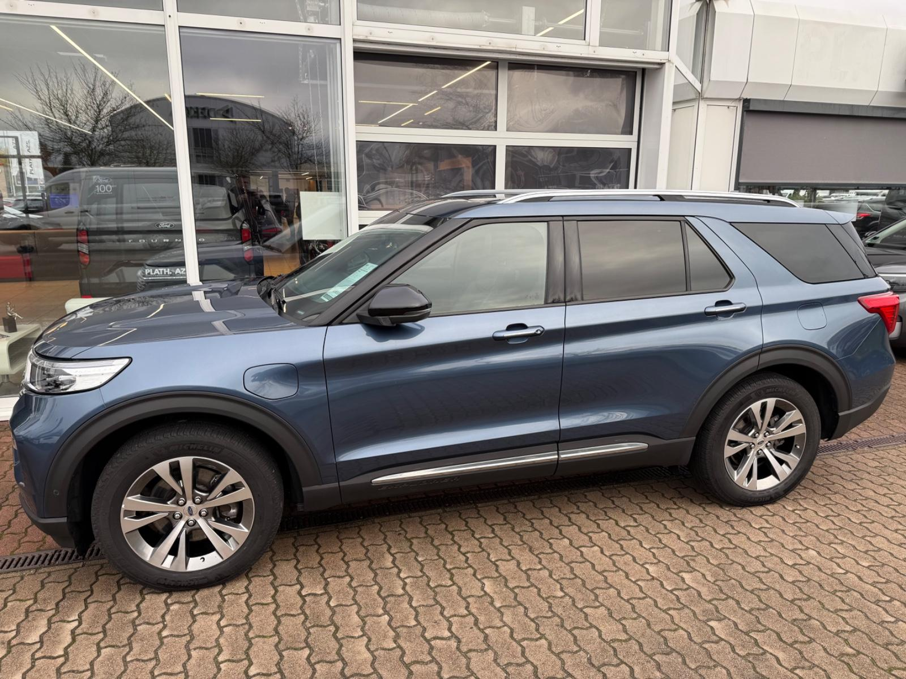
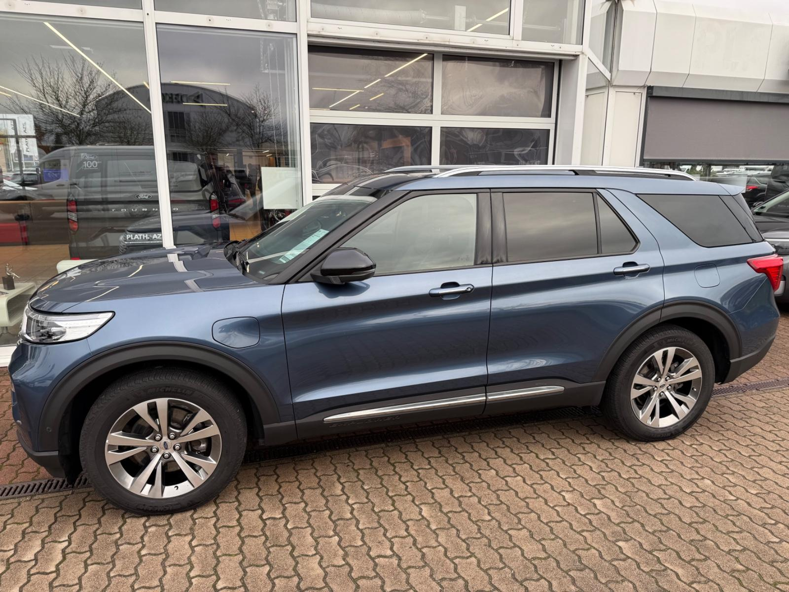

Die Beratungszeiten sind Montag, Mittwoch und Freitag von 9 bis 18 Uhr sowie Dienstag und Donnerstag von 8 bis 16 Uhr.
Um Wartezeiten zu verhindern bitten wir Sie um vorherige Terminvereinbarungen, auch außerhalb der angegebenen Beratungszeiten möglich. Sie erreichen Ihren Ansprechpartner Alexander Pagel unter 01634050344.
Ebenfalls beraten wir Sie gern telefonisch oder Online im Videochat über Facetime oder Whatsapp.
Sonderausstattung:
Metallic-Lackierung
Weitere Ausstattung:
3.Sitzreihe, Einzelsitze elektr. klappbar (2 Sitzplätze), Adaptive Geschwindigkeits-Regelanlage mit Stop&Go-Funktion, Aktive Geräuschkompensation, Anhängerkupplung Vorbereitung, Antischlupfregelung (ASR), Audio-Navigationssystem Ford mit AppLink, Außenspiegel andersfarbig lackiert / Kontrastfarbe, Außenspiegel elektr. verstell- und heizbar, mit Memory, Brillenfach in Dachhimmel / Dachkonsole integriert, Dachreling verchromt, Einstiegschienen mit Modell-Schriftzug, Elektr. Bremskraftverteilung (EBD), Elektromotor 74 kW (Hybridantrieb), Fahrassistenz-System: aktiver Park-Assistent Plus, Ein- und Auspark-Funktion und teilautomatisierter Fahrzeugführung, Fahrassistenz-System: Ausweich-Assistent (Evasive Steer Assistance, ESA), Fahrassistenz-System: Bergabfahr-Assistent, Fahrassistenz-System: Berganfahr-Assistent (Hill-Holder), Fahrassistenz-System: Notbrems-Assistent, Fahrassistenz-System: Post-Collision-System, Fahrassistenz-System: Pre-Collision-System, Fensterheber elektrisch vorn + hinten, FordPass Connect inkl. eCall, Frontkamera mit Split View, Fußmatten Velours mit Ziernähte, Gepäckraumabdeckung / Rollo, Getriebe Automatik - Typ: 10R80 (10-Stufen), Heckleuchten LED, Heckspoiler Wagenfarbe, Induktionsladeschale für mobile Endgeräte, Innenausstattung: Leder / Holz, Innenspiegel mit Abblendautomatik, Intelligent Protection System (IPS), Intelligenter Geschwindigkeits-Begrenzer, Isofix-Aufnahmen für Kindersitz, Karosserie: 5-türig, Klimaautomatik 2-Zonen, Kofferraumdeckel / Heckklappe elektr. betätigt (Öffnung, sensorgesteuert), Kombiinstrument Digitalanzeige 12,3 Zoll, Lenkrad (Holz/Leder), Lenkrad heizbar, Lenkrad mit Schaltwippen, Lenksäule (Lenkrad) elektr. höhen-/längsverstellbar mit Memory, LM-Felgen, Motor 3,0 Ltr. - 267 kW EcoBoost Hybrid, My Key (2. Fahrzeugschlüssel programmierbar), Nebelscheinwerfer LED, Panorama-Schiebedach elektr. mit Solar-Reflect, Parkbremse elektrisch mit Auto-Hold-Funktion, Parkpilotsystem vorn und hinten, Radstand 3025 mm, Reifendruck-Kontrollsystem, Reserverad als Notrad, Rückfahrkamera mit Split View, Schadstoffarm nach Abgasnorm Euro 6d-TEMP, Scheinwerfer LED, Scheinwerfer-Assistent mit Tag-/Nachtsensor, Sitz vorn links elektr. verstellbar (10-fach, mit Memory), Sitz vorn rechts elektr. verstellbar (8-fach), Sitzausstattung: 7-Sitzer, Sitzbezug / Polsterung: Leder Premium, Sitze vorn klimatisiert, Sound-System Bang & Olufsen Play, Sport-Fahrwerk, Sportsitze vorn, Start/Stop-Anlage, Steckdose (12V-Anschluß) im Koffer-/Laderaum, Steckdose 230V, Türverkleidung Leder, Verglasung hinten abgedunkelt (Privacy Glass), Wankneigungskontrolle (Roll Stability Control, RSC)
Inkl. HU/AU neu und 12 Monate AZS-Premium-Gebrauchtwagengarantie
"Bester Autohändler + beste Werkstatt Deutschlands 2016 + 2017 + 2018 + 2019 + 2020 + 2021 + 2022 + 2023 + 2024" in Rostock, verliehen von Auto Bild
Wir bieten Ihnen: Gepflegte Jahreswagen, Attraktive Dienst- und Geschäftswagen, preisinteressante Flottenfahrzeuge. , Nicht fündig geworden ??? Nicht die passende Ausstattung ??? Wir suchen Ihnen Ihr Wunschmodell gerne aus unserer Datenbank. Wir freuen uns auf Ihre Anfrage oder Ihren Anruf. Weitere Informationen erhalten Sie auf unseren Internetseiten !, Gegen Mehrpreis stellen wir Ihnen das bestellte Fahrzeug gerne auch bundesweit zu !
Sie erreichen uns nach Feierabend, Sonn- und Feiertags unter der Telefonnummer 0163-4050344.
Weiteres: Irrtümer und Änderungen vorbehalten
 
